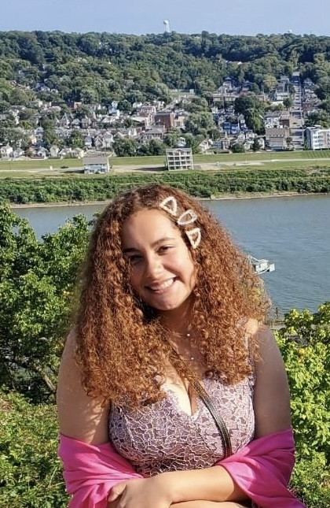

About Sophia
Scroll down to learn more about me and my journey in design and development.
Scroll down to learn more about me and my journey in design and development.
Honestly, the true start of my journey into game design was when I was a kid. I actually have my grandmother to thank for introducing me to the world of gaming. She was a huge fan of hidden object games and the Traveller's Tales Lego games, and would often let me play them with her while I'd spend the summer at her house. I remember being fascinated by the worlds and stories in those games, and it sparked a curiosity in me about how they were made. As I got older, I wasn't sure what I wanted to do with my life, but I always had a love for games and storytelling. It wasn't until I realized that I could actually make the kinds of games I had so many fond memories of that I decided to pursue game design and development.
I knew that when I wanted to pursue a career in games, that I would be a game designer first and foremost.
Being at the reigns and being able to push my own creative vision was something that I knew
I wanted to be able to do. I just have so many ideas that I want the world to experience,
and I want to be able to share those ideas in the most direct way possible - Games.
During my academic career as a student in a games program, I have had the opportunity to create and lead many game projects,
both solo and in teams. In most, I took the role of either game designer or developer. And in some, I took on both roles.
I have experience in designing and developing games across a variety of genres, including puzzle games, shooters, and narrative-driven games.
I have worked best in indie teams, as getting to collaborate with others who have different skillsets and perspectives is
something that I really enjoy and find the most effective for outputting polished games with a clear vision, though I am capable
of working solo as well.
When first realizing that I wanted to work in the games industry, I also knew that I wanted to learn everything
about everything that goes into making games. I wanted to be able to understand the entire process,
from concept to completion, and be able to contribute in any way possible. So in school, that is what I am striving to do.
I decided that a great way to do this was to learn how to code, as I had no prior experience with coding before
starting at Miami. I have since become proficient in web development coding (this very site was made by scratch by me!),
Java, C#, C++, and have experience with several game engines, including Unity and Unreal Engine.
Since my time at college, I have developed a strong understanding of game mechanics,
player psychology, and user experience design. I am passionate about creating games that
are not only fun to play but also meaningful and impactful for players.